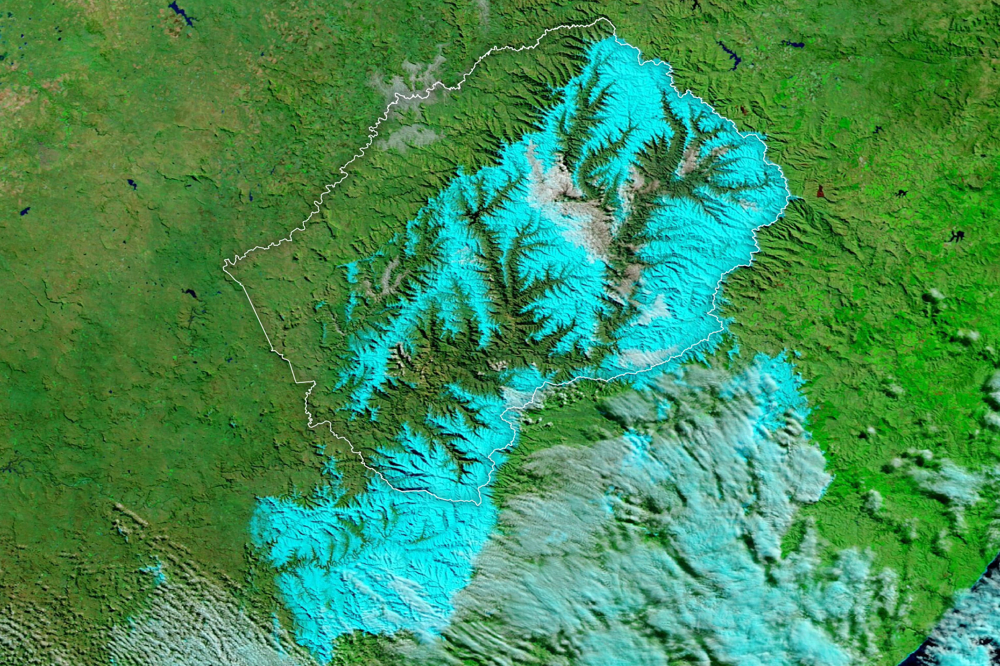

Winter Arrives Early in Lesotho and South Africa
A powerful storm system brought wintry conditions to Lesotho and South Africa in early June 2025. Snow blanketed higher elevations, while strong winds, cold temperatures, and heavy rains affected lower-elevation and coastal areas.
The severe weather was fueled by a cut-off low, which occurs when an area of low pressure becomes cut off from the jet stream. The weather system parked over central and eastern South Africa and Lesotho on June 9 and 10. The storm had subsided by June 11, when the MODIS (Moderate Resolution Imaging Spectroradiometer) on NASA’s Terra satellite acquired these images.
The left image shows the area in natural color, while the right image is false-color to help distinguish the snow (light blue) from clouds (white). (Note that small ice crystals in high-level clouds can also display a bluish tinge.) Fresh snow covers much of Lesotho, as well as portions of South Africa’s Eastern Cape and KwaZulu-Natal provinces. The snow created treacherous driving conditions and prompted closures of several sections of highway, according to news reports.
Snow is typically sparse during the area’s short winter, although heavy snowfall occasionally occurs. In northern Lesotho, at an elevation of 3,050 meters (10,000 feet), the country’s sole ski resort maintains artificial snow on slopes that might otherwise be bare. But a different look ushered in the 2025 season. On June 9, the resort shared a video of whiteout conditions and a simple message: “We are snowed in.” They later reported accumulations of about 30 centimeters (12 inches).
To the south and east of snow-affected regions, heavy rain triggered deadly flooding that submerged homes and damaged dozens of schools and hospitals, officials told news outlets. In addition, winds gusting up to 100 kilometers (60 miles) per hour toppled trees and knocked out power to hundreds of thousands of homes.